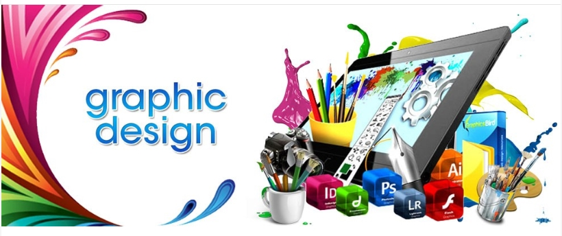
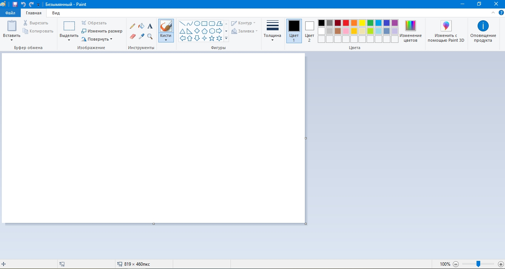

Mavzu: Grafik axborotlar bilan ishlovchi dasturiy vositalari bilan ishlash
Kompyuter taqdimotlari tushunchasi. Power Point ADP - ma'ruza qilishda prezentasiyalarni
(taqdimotlarni) tayyorlash uchun xizmat qiladi.

Power Point ADP-universal, imkoniyatlari keng bo'lgan, ko'rgazmali grafika amaliy dasturlari
tarkibiga kiradi va matn, rasm, chizma, grafiklar, animasiya effektlari, ovoz, videorolik va boshqalardan tashkil topgan slaydlarni yaratish imkonini beradi. Power Point yaratgan hujjatlarini Officening boshqa muharrirlariga, Web sahifa ko'rinishida, rasm ko'rinishida (*.bmp, *.jpg) va boshqa ko'rinishlarda eksport qilish imkoni ham berilgan.
Power Point ADP Misrosoft firmasining prezentatsiyalar bilan ishlash uchun eng qulay bo'lgan dasturiy vositalardan biridir. Bu dastur orqali barcha ko'rgazmali qurollarni yaratish va ba'zi joylarda esa ma'lumotlar bazasi sifatida ham qo'llash mumkin. Ayrim hollarda bu dasturdan multimedia vositalarini boshqarish va ularni ko'llab, namoyish etuvchi qurilmalarga yuborish vazifalarini ham bajarish mumkin. Dasturdagi asosiy tushunchalar bu - slayd va prezintatsiya tushunchalaridir.
Prezentatsiya - bu slaydlar va maxsus effektlar to'plami bo'lib, ularni ekranda ko'rsatish, tarqatiladigan material, ma'ruza rejasi va konspekt shaklida bitta faylda saqlanadi.
Slayd - bu prezentasiyani alohida qadiri bo'lib, matnni, sarlavxalarini grafik va diagrammalarni o'z ichiga oladi. Power Point vositalari bilan barpo etilgan slaydlarni oq-qora yoki rangli printerda chop etish yoki maxsus agentligi yordamida 35 millimetrli slaydlarni fotoplenkalarda tayyorlash mumkin.
Animasiya - bu slaydlarni namoyish qilish va ko'rsatishda ularni samaradorligini oshiruvchi tovush, rang, matn va harakatlanuvchi effektlar va ularni yig'indisidan iborat.
Tarqatiladigan material - qulay shaklda bosib chiqarilgan va tanishish uchun mo'ljallangan materiallar. Ular bir betda ikki, to'rt yoki olti slaydlar chop etilgan bo'ladi.
Maruza konspekti - Power Point da prezentasiya ustida ishlash jarayonida yaratilgan ma'ruza konspekti. Chop etish vaqtida ma'ruza konspektining har bir betida slayd va tekstning mazmunini tushuntiruvchi kichiklashtirilgan tasvir chiqarilgan bo'ladi.
Prezentasiya strukturasi (tuzilishi) - faqatgina slayd sarlavhasini, shuningdek grafik tasvirsiz asosiy matnni va maxsus shakllantirishini ichiga olgan hujjat.
Quyida Power Point bo'yicha qo'shimcha video darslar jamlanmasi mavjud.
Paint pikselli tasvirlar muharriri.
Paint pikselli tasvir muharriri bo‘lib, mazkur dastur turli xil rasm va shakllarini hosil qilish va qayta ishlashda foydalaniladi. Unda hosil qilingan tasvir boshqa amaliy dasturlarda qo‘llanilishi mumkin. Aytib o‘tilganidek, dastur ko‘niagida oddiy matnli jadval va diagrammalar hamda yuksak saviyali san’at asarlarini yaratish mumkin. Dastur yordamida Windowsning boshqa dasturlarida yaratilgan ixtiyoriy matn yoki graɗk ma’lumotlar nusxasini olish yoki skaner qurilmasi yordamida o‘ta qiyin talqindagi san’at asarlaridan nusxa olish, tahrir qilish va chop qilish ishlari majmuini bajarish mumkin.
Файл, Правка, Вид, Рисунок, Палитра, Справка. Menuning dastlabki ikki bo‘limi bandlari Windows amaliy dasturlari uchun umumiy bo‘lgan vazifalarni bajaradi.
Файл bo‘limi bandlari quyidagi vazifalarni bajarish uchun mo‘ljallangan.

Fayl menu guruhi.
Создать – New (Ctrl + N) – Yangi rasm faylini yaratish.
Открыть – Open (Ctrl + O) – Tashqi xotirada mavjud bo‘lgan (eski) faylni (ko‘rish, tahrirlash, o‘zgartirish va boshqa ishlar uchun) ochish.
Сохранить – Save (Ctrl + S) – Faylni qilingan o‘zgartirishlar bilan tashqi xotirada saqlash.
Параметры страницы – Page setup – Varaq xususiyatlarini (oichami, kattaligi, rasm chegaralarini, kolontitullarini va hoka zo) ko‘rish va o‘zgartirish.
Печать – Print (Ctrl + P) – Ekrandagi tasvirni chop etish (bosmaga chiqarish).
Параметры печати– Print setup – Rasmni bosmaga chiqarish parametrlari.
Правка bo‘limi tasvirlar ustida quyidagi amallarni bajaradi.
Pravka menu guruhi.
Отменить – Undo (Ctrl + Z) – Oxirgi harakatni bekor qilish.
Повторить – Redo (Ctrl + Y) – Bekor qilingan harakatni takrorlash.
Вырезать – Cut (Ctrl + X) – Tanlangan rasm qismini xotiraga qirqib olish.
Копировать – Copy (Ctrl + C) – Tanlangan rasm qismining nusxasini xotiraga olish.
Вставить – Paste (Ctrl + V) – Kursor turgan joyga xotiradagi rasm qismini qo‘yish.
Очистить все – Delete (Del) – Tanlangan sohani tozalash (o‘chirish).
Выделить все - (Ctrl + A) – Butun rasmni guruhga olish.
Копировать в – Copy to – Tanlangan soha nusxasini boshqa faylga ko‘chirish.
Вставить из – Paste from – Boshqa fayldan rasm qismini ko‘chirish.
Вид - bo‘limida jihozlar majmuasi (Набор инструментов), ranglash sohasi (Палитра), holat satri (Строка состояния), matn belgilari paneli (Панель атрибутов текста) va tasvirni ekranda tola ko‘rish (Просмотреть рисунок) kabi amallarni bajarish mumkin. Masalan, matn harflarini tanlash va o‘lchamlarini o‘zgartirish uchun «Панель атрибутов Teкстa»ga murojaat etiladi.
Vid menu guruhi
Инструменты – Tools and Lines (Ctrl + T) – Yordamchi qurollar qismini ekranga chiqarish.
Палитра (Ctrl + L) – Ranglar qismini ekranga chiqarish.
Строка состояния – Ma’lumotlar satrini ekranga chiqarish.
Панель атрибутов текста – Matn xususiyatlari qismini ekranga chiqarish.
Масштаб – Rasmni ko‘rish va masshtabini o‘zgartirish.
Просмотреть рисунок (Ctrl + F) – Rasmning tayyor holatini ko‘rish.
Рисунок bo‘limi ko‘magida tasvirni akslantirish (90, 180, 270 gradusga rasmni burish), aylantirish, kengaytirish va og‘dirish amallari bajariladi.Tasviming o‘lchamlari va ranglanishi Атрибуты bandi yordamida bajariladi.
Adobe Photoshop dasturi rastrli grafik muharriri xisoblanib Adobe Inc.
kompaniyasi tomonidan Windows va MacOS operatsion tizimlari uchun ishlab
chiqilgan. Photoshop dasturi ko‘p qavatli rastrli tasvirlarni yaratish va tahrirlash,
maska va ko‘p rang modellarini qo‘llash imkoniyatini beradi. Ushbu xususiyatlarni
qo‘llash uchun dastur o‘zining PSD va PSB fayl formatlarini ishlatadi. Rastrli
grafikadan tashqari dastur vektorli grafika va 3D grafikalar bilan ishlash uchun
cheklangan imkoniyatlari mavjud. Photoshop dasturi tasvirlarni piksellar to‘plami
sifatida yaratadi. Photoshop dasturining mo‘yqalam, aerograf, pero va qalam kabi
uskunalari yordamida tasvirni rassom kabi xolstda yaratib olish mumkin. Dasturdagi
barcha uskunalarning xususiyatlarini foydalanuvchi talabiga mos ravishda
o‘zgartirib olish mumkin. Photoshop dasturining ustunlik tomonlaridan biri bu
qavatlarning qo‘llanilishi. Har bir qavatni tasvirning qolgan qismiga ta’sir qilmagan
holda mustaqil ravishda o‘zgartirish va xususiyatlarini belgilab olish mumkin.
Photoshop dasturining asosiy qo‘llanilish sohasiga tasvirlarni retushlash, matn
bo‘laklarini o‘z ichiga oluvchi kompozitsiyalarni yaratish, boshqa grafik
muharrirlarda yaratilgan tasvirlarni tahrirlash, dasturning uskunalari va vositalaridan
foydalanib chizish texnikasini taqlid qilgan holda tasvir yaratish kiradi. Photoshop
dasturining asosiy imkoniyatlariga raqamli tasvirlarni qayta ishlash, ranglarni
sozlash, tasvir nuqsonlarini yo‘qotish, ko‘p qavatli tasvirlarni yaratish, fotomontaj,
fotokollajlarni yaratish, retushlash va eski rasmlarni tiklash, eskizlar yaratish,
matnlar bilan ishlash, teksturalar yaratish, tasvirlarni chop etishga tayyorlash,
tasvirlarning turli standartlari va formatlarini qo‘llash kiradi.
Quyida Adobe Photoshop dasturi bo'yicha qo'shimcha video darslar jamlanmasi mavjud.